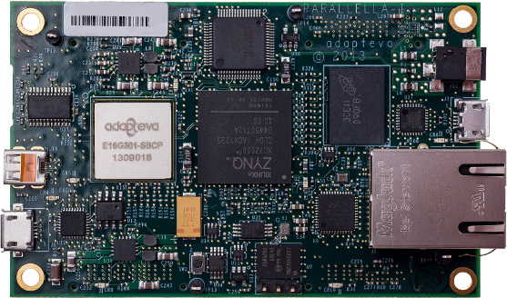
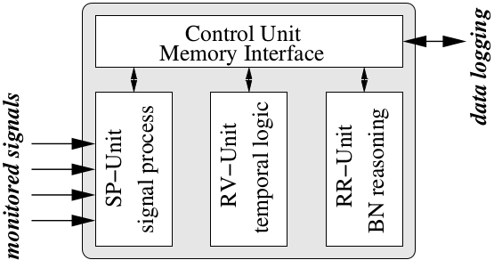
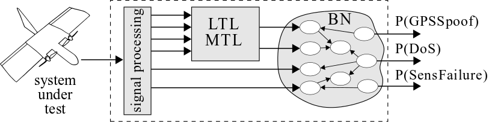
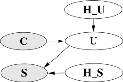
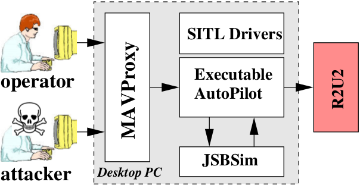
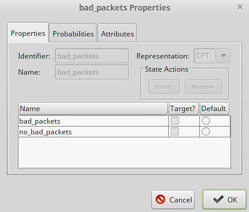
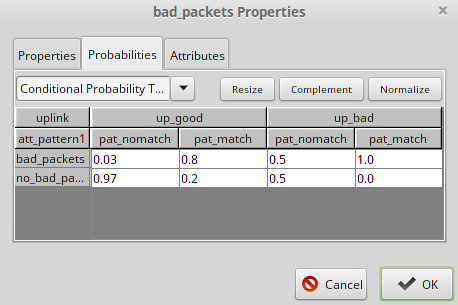

Johann Schumann
[SGT, Inc., NASA Ames, Moffett Field, CA, USA]
<Johann.M.Schumann@nasa.gov>
Patrick Moosbrugger
[Vienna University of Technology, Vienna, Austria]
<moosbrugger@cps.tuwien.ac.at>
Kristin Y. Rozier
[Iowa State University, Ames, IA, USA]
<KYRozier@iastate.edu>
This is the tool demonstration website to our paper.
It contains detailed information about R2U2,
documentation, examples, and demo scripts.
Disclaimer: The files distributed on this page contain research prototype code and examples published in the paper above. The files are compatible with the software releases as stated in the requirements; we make no claims regarding compatibility with any other versions. Please feel free to email one of the authors concerning clarifications, bugs, or other corrections.
Abstract
We present R2U2 (Realizable, Responsive, Unobtrusive Unit), a hard-ware-supported tool and framework for the continuous monitoring of safety-critical and embedded cyber-physical systems. With the widespread advent of autonomous systems such as Unmanned Aerial Systems (UAS), automated spacecraft, satellites, rovers, and cars, real-time, on-board decision making requires unobtrusive monitoring of properties for safety, performance, security, and system health. R2U2 models combine past-time and future-time Metric Temporal Logic, "mission time" Linear Temporal Logic, probabilistic reasoning with Bayesian Networks, and model-based prognostics.
The R2U2 monitoring engine can be instantiated as a hardware solution, running on an FPGA, or as a software component. The FPGA realization enables R2U2 to monitor complex cyber-physical systems without any overhead or instrumentation into the flight software.
In this tool exhibition report, we present R2U2 and demonstrate
applications on system runtime monitoring, diagnostics, software
health management, battery prognostics, and security monitoring
for a UAS. Our tool demonstration uses a hardware-based
processor-in-the-loop "iron-bird" configuration.
R2U2 is a TRL-1 research prototype.
[http://www.nasa.gov/pdf/458490main_TRL_Definitions.pdf]
1. R2U2 Architecture
The R2U2 monitoring engine can be instantiated as a hardware solution, running
on an FPGA, or as a software component.
For execution inside an FPGA, we use an Adapteva Parallella Board
[https://www.parallella.org/board]
,
which is a credit-card sized, low-cost platform, featuring a Xilinx
Zynq xc7z010 FPGA.

An overview of the architecture inside the FPGA is shown in the Figure below. The Control Unit is responsible for synchronizing the subcomponents and provides the interface to export the results from the evaluation online.
The monitored signals which are streamed from the system under test are fed into the signal preprocessing unit (SP_Unit). Each input signal can be associated with a seperate filter configuration. The preprocessed signals can then be forwarded to the runtime verification unit (RV_unit), where the temporal specifications are evaluated, or to the runtime reasoning unit (RR_unit), where the Bayesian reasoning is performed. Also the results from the RV_unit can be forwarded to the BN_reasoning. All this operations are performed online.

On the Parallella Board, the R2U2 framework is running at a maximum frequency 85.164MHz. Allthough all R2U2 processing components are available in the FPGA configuration, equivalent software implementations of the signal processing unit (SP-unit) and the BN reasoning (RR-Unit) have been used for the experiments in this paper, as they facilitate fast model development and testing.
2. R2U2 Models
The R2U2 models are constructed out of a combination of signal processing modules, temporal formulas, and Bayesian networks.

The preprocessing stage enables to directly use signals from various sources and thus, offers flexibility to a high exented. Filters we support are for example:
-
FFT
-
Lowpass
-
Highpass
-
Trends
-
Rate
-
Convolution
-
Mean
The preprocessed signals can then be used in LTL/MTL specifications where we support past-time and future-time Metric Temporal Logic, "mission time" Linear Temporal Logic, probabilistic reasoning with Bayesian Networks, and model-based prognostics.
We construct Bayesian networks to model security or safety aspects of the SUT.

Besides the BN outputs, also all the intermediate results (filtered signals, ltl/mtl observers) are available at the output.
3. R2U2 Interface
R2U2’s default platform, the Parallella board, provides several interfaces (e.g. UART, I2C, Ethernet, GPIO, ADC’s, …) that can be used as the interface to receive data traces from the system under test (SUT).
However, our default setup is only configured to use a Universal Asynchronous Receiver Transmitter (UART) connection only.
This is due to the fact that it offers a true hardware read-only interface by disconnecting the transmission wire and set it to a defined level.
Furthermore, UART is supported by many systems as for example, the APM flight computer
[http://ardupilot.org/plane/docs/common-apm25-and-26-overview.html]
we used for many of our experiments.
3.1. Accessing the Parallella board for Configuration/Evaluation
The R2U2 tool can be configured using an SSH connection to the Parallella board. This includes the creation and compilation of the R2U2 Models. Since the Parallella board provides HDMI+USB, It can also be directly connected to a Monitor+Keyboard.
The results of the evaluation are continuously written into files on the SD-card of the Parallella board.
Scripts for vizualisation in GNU Octave
[https://www.gnu.org/software/octave/]
and Matlab
[https://www.mathworks.com]
are available on the Parallella board.
{kind=link}
4. Example Casestudy
The following section provides a walkthrough for a typical casestudy from [RV15], where we simulated a GPS spoofing attack on the NASA Dragoneye UAS, and used an R2U2 model for the detection. First, we introduce the different testbeds that are available for the casestudy. Then we present a simulation of the scenario using the software-in-the-loop simulation. Finally, we will demonstrate how to construct a simple model to detect the attack and how to perform the evaluation.
4.1. R2U2 Testbeds
Our testbed setups aim at realistic flight scenarios while we want to ensure flexibility, the reproducibility of experiments, as well as minimizing the risk when performing tests. In order to meet the demand for different scenarios, we use different testing strategies by means of three different testbed environments. These three testbed setups (Dragoneye, Processor-In-The-Loop (PITL), Software-In-The-Loop (SITL)) will be introduced below.
{kind=link}
As can be seen in the Figure above, R2U2 is used in an equal manner independent of the testbed setup. Hence, there is no need for individual adjustments and all approaches offer white box tests of the software. When compiling the flight software, binary executables are created either for the APM flight computer target, or for a personal computer.
4.1.1. Dragoneye UAS
With the Dragoneye setup (A) we perform online monitoring directly on-board the Dragoneye UAS during a flight. The communication between the flight computer and the R2U2 framework, running on the Parallella board, uses a read-only UART interface. An operator is responsible for launching, landing, and might have to control the UAS manually via the GCS over a radio link. This scenario consumes a lot of effort both, in terms of planning and conducting the tests. Besides, every flight is a potential risk for the aircraft and its environment, especially when testing airborne fault injections.
Injecting faults during a UAS flight poses a threat to the UAS and its environment. An option is to mitigate the consequences of the injected faults. Nonetheless, a complete roll back might not be possible, or there can be unforeseen side effects.
Another disadvantage of this setup is that it is practically impossible to perform two totally equal flights, thus, reproducibility of experiments is heavily limited.
4.1.2. Ironbird Testbed
(B) illustrates the processor-in-the-loop (PITL) or “Ironbird” setup. The Ironbird is a UAS laboratory configuration, consisting of the actual Dragoneye hardware like the flight computer, the sensors, the actuators, and the communication devices. Compared to the Dragoneye, the Ironbird is not able to fly and has no engines. However, it offers direct access to the aircraft’s hardware components. Thereby, the Ironbird setup enables to read data or simulate certain conditions (e.g., fault injections, or simulate certain sensor measurements) by tapping into the component’s interfaces. Thus, injected faults or attack scenarios can be tested without risk. Since the hardware components of both, the Ironbird, and the Dragoneye are equal, the same binary executables of the FSW are executed. Therefore, the setup offers a realistic testing environment for the flight software. Furthermore, due to the laboratory environment, reproducibility is improved compared to real test flights. However, simulating a realistic test flight requires a huge effort, since all the sensor readings (e.g., GPS, airspeed, barometric altimeter) have to be simulated and have to react accordingly to the actuator’s actions. Communication with the (test) operator can either be performed via the radio link, or directly by means of a USB connection to the flight computer. All components are the same as the Dragoneye setup, also the communication to the R2U2 framework is identical. Hence, the data is transmitted via a read-only UART interface.
4.1.3. SITL Simulation
The software-in-the-loop (SITL) test setup (C)
is a simulation environment for the NASA Dragoneye UAS on a Desktop PC using the
Ardupilot SITL Simulator
[http://ardupilot.org/dev/docs/sitl-simulator-software-in-the-loop.html#]
.

As illustrated in the Figure above, the Dragoneye UAS flight behavior
is simulated by the Open Source JSBSim flight dynamics model.
The flight software (executable autopilot) is compiled from the same sources as
for the Dragoneye and the Ironbird setup.
However, the SITL executable uses specific low-level drivers, which emulate
all of the aircraft’s hardware components and communicate directly
with the JSBSim flight dynamics model via local UDP connections.
The Open Source MAVLink proxy
[http://dronecode.github.io/MAVProxy/]
is connected via local TCP connections
to the autopilot software. This enables to connect multiple
ground control stations to the UAS simulation.
Thus, for our case studies,
an attacker GCS is connected besides the operator GCS in order to simulate
the injection of malicious MAVLink packets to the UAS.
The SITL low-level drivers are used to simulate fault injections or malicious attacks on sensors like, for example, sensor failures, GPS spoofing, or radio jamming. Thus, compared to the Dragoneye setup, faults can be injected without the risk of damaging the aircraft during a real test flight. Triggering of such fault injections or simulated attacks can be achieved by sending specifically designed MAVLink packets via the MAVLink proxy.
The simulated UART SITL drivers are directly streaming the extracted monitoring data on a physical UART of the PC. Hence, the data transmission to the R2U2 framework is equal to the Dragoneye or the Ironbird setup.
In order to provide realistic test flights, the simulation uses random sensor noise and random environmental conditions like wind. However, since all parameters are controllable and the simulated missions can be carried out automatically by predefined scripts, the test flights are reproducible.
4.2. Simulation of the Dragoneye UAS
4.2.1. Requirements for the SITL Simulation:
A manual on how to setup the SITL Simulation can be found here:
4.2.2. Explore the simulation dataflash logfiles:
We provide dataflash logfiles of the autopilot software for different case studies we presented in [RV15]:
You can go through our simulation dataflash logfiles using APM Planner 2.0. Start APM Planner 2.0, and as shown in the figure below, switch to the "GRAPHS" view, go on "Open Log", and select the apm_dataflash*.bin file from the casestudy directory.
{kind=link}
Now you can select the signals you want to display in the right pane. Scaling can be changed by doubleclick on the vertical axis. For example, to see some interesting signals for the GPS Spoofing casestudy, display the signals as can be seen in the next figure.
-
AHR2.Lng (Aircraft’s internal AHRS Longitude)
-
SIM.Lng (Actual Aircraft’s Longitude)
-
EKF4.OFN (EKF GPS Position Glitch Offset North)
-
EKF4.EFE (EKF GPS Position Glitch Offset East)
{kind=link}
In order to run the SITL Simulation, please refer to the manual here. If you intend to run the simulation scripts from our casestudies, you will need to install the MAVProxy modifications. Simply overwrite the files in the MAVProxy installation directory with the files you can download here. Once the SITL simulation is running, you can execute this scripts using the modified MAVProxy application by issuing the command "script <path_to_script>". To reproduce our results, you can follow the directions from our flight_plan.ods, which is located in each casestudy directory.
4.3. Creation of an R2U2 Model
Requirements for the Model generation:
-
R2U2 LTL comiler: LTL2R2U2 <please contact authors>
-
R2U2 BN compiler: aceEval_C <please contact authors>
4.3.1. Create temporal observers
The LTL/MTL formulas to be evaluated are defined in an text file as shown below:
{kind=link}
In Lines 2-5, the results from the preprocessing stage / the atomic proposition checkers are mapped to labels, in order to use them in the formulas. The assigned values refer to the index of the outputs from the preprocessing. The labels can then be used in the formulas.
The file is split into a section with past time formulas and future time formulas. Each section can include an arbitrary number of formulas. Currently, we support up to 256 formulas, however, the maximum limit can be extended by defining a larger results memory in the R2U2 FPGA design parameters.
Each formula can have label as can be seen, for example, in line 12 (bad_packets). These labels are used in order to map the result of a formula to a node within a R2U2 Bayesian network model. Furthermore, these labels are used for in the Matlab vizualisation scripts of the results.
The supported operators / syntax is described in further details here.
These files are then compiled to the R2U2 binary program using the LTL2R2U2 compiler.
4.3.2. Create Bayesian network model
For designing the R2U2 Bayesian network models, we use the free graphical design environment Samiam from the Automated Reasoning Group of the University of California.
Please refer to their documentation for details on how to install/use the tool.
{kind=link}
To define different states, doubleclick on a node, select the tab "Properties", and add the states as shown in the figure below.

To define the CPT tables, double click on a node, select the tab "Probabilities" and enter the Probabilities for the different combinations.

The tool offers a query mode where the model can be evaluated. To enable the query mode select menu→mode→query mode.
Next, select: query→show monitors→show all in order to display the monitors of all nodes.
As can be seen in the figure below, an observation can be simulated by selecting the observed stated on a node. The probabilities of the other nodes are instantenously updated.
{kind=link}
4.4. Example Video
This video illustrates the workflow for monitoring and diagnosis using the R2U2 framework by means of an exemplary GPS Spoofing Case Study for a UAS.
Bibliography
-
[RV14] Geist, J., Rozier, K.Y., Schumann, J. Runtime observer pairs and bayesian network reasoners on-board FPGAs: Flight-certifiable system health management for embedded systems. In Proc. RV2014: Runtime Verification - 5th International Conference, Toronto, ON, Canada, September 22-25, 2014. Proceedings. pp. 215-230 (2014), http://dx.doi.org/10.1007/978-3-319-11164-3_18
-
[RV15] Schumann, J., Moosbrugger, P., Rozier, K.Y. R2U2: Monitoring and Diagnosis of Security Threats for Unmanned Aerial Systems. In: Proc. RV2015: Runtime Verification - 6th International Conference, Vienna, Austria, September 22-25, 2015 Proceedings. pp. 233-249 (2015), http://dx.doi.org/10.1007/978-3-319-23820-3_15